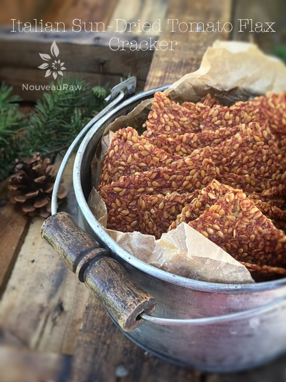
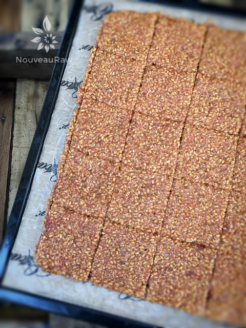
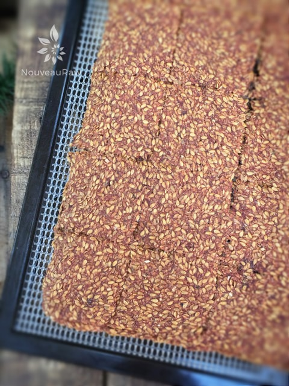
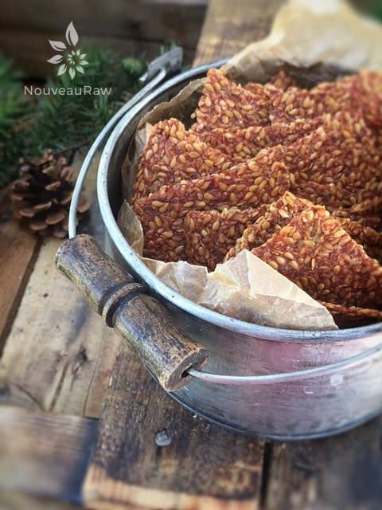

Italian Sun-Dried Tomato Flax Cracker

~ raw, vegan, gluten-free, nut-free ~
Oh, the simplicity of flax crackers. It doesn’t really take much to turn a simple flax cracker into something pretty amazing. In this recipe, the sun-dried tomato powder is what gives it a nice “tang” on the tongue.
Since creating this recipe, I am finding tomato powder to be much more available in grocery stores. But it all depends on where you live and for some, it may be a real challenge to find.
If you find yourself in this predicament, fear not, you can make your own and it is simple to do. You will need sun-dried tomatoes that are not packed in any liquid. They need to be dry. Place them in a spice or coffee grinder and process until it reaches a nice powder. I used my Bullet for this recipe and it worked like a charm.
You will notice in this recipe that you use less water in the soaking process of the flax seeds. This is so you can make a denser cracker that can hold up to a good dip or spread. This is to make up structurally for the lack of raw veggies in this recipe. But you can be sure this cracker, while it may appear to be plain and simple, packs a wonderful savory punch with an Italian flare.
I used a combination of ground and whole flax seeds. In order for the body to absorb their nutrients, they either need to be fresh ground or soaked in water. You will be doing both of those techniques, so be rest assured that your body will be loaded with wonderful omega’s and fiber. I hope you enjoy this recipe. Blessings, amie sue
yields 50 crackers
- 1 1/2 cups flaxseeds
- 1/2 cup ground flax seeds
- 2 1/2 cups water
- 1/2 cup dried tomato powder
- 1/4 cup minced onion
- 2 Tbsp Brags Aminos or Tamari
- 2 Tbsp fresh lemon juice
- 2 tsp Italian seasoning
- 2 garlic cloves, minced
Preparation:
- In a large bowl, combine the flax seeds, ground flax, water, tomato powder, minced onion, Tamari, lemon juice, Italian seasoning, and garlic. Mix well, making sure that there aren’t any lumps.
- Set aside to allow the flax to start doing its magic.
- Once the water is fully absorbed and the batter is nice and thick, it is ready.
- If you don’t have fresh garlic you can use 1 tsp garlic powder.
- Line the dehydrator trays with non-stick sheets.
- If you don’t have teflex sheets you can use parchment paper. Don’t use wax paper, they will stick!
- Using the 2 Tbsp size cookie scoop, dip the scoop into the batter and level it off with a spatula. So have the cookie scoop in one hand and a spatula in the other. In time you will create a steady rhythm.
- Place the cracker batter on the non-stick sheet with a little space between them. The batter will spread out a bit.
- If you have an Excalibur 9 tray dehydrator, you can fit 25 crackers per tray.
- Continue this process until you have used up all the batter.
- Alternatively, you can just spread the batter on the non-stick sheet into one large sheet, then score into desired sizes.
- Sprinkle coarse sea salt on top.
- Dehydrate at 145 degrees (F) for 1 hour, then reduce to 115 degrees (F) for approximately 5-8 hours.
- Flip the non-stick sheet over onto the mesh sheet and peel the teflex off. Continue drying for another 10 hours or until dry.
- Once they are done and cooled, place them in an airtight container.
Culinary Explanations:
- Why do I start the dehydrator at 145 degrees (F)? Click (here) to learn the reason behind this.
- When working with fresh ingredients it is important to taste test as you build a recipe. Learn why (here).
- Don’t own a dehydrator? Learn how to use your oven (here). I do however truly believe that it is a worthwhile investment. Click (here) to learn what I use.

The picture above is the crackers ready to head into the dehydrator. Below, is what they look like coming out.


© AmieSue.com